Inhalt Index DeskTop Bronstein

 Funktionalanalysis Stetige lineare Operatoren und Funktionale Elemente der Spektraltheorie linearer Operatoren Spektrum eines Operators
Funktionalanalysis Stetige lineare Operatoren und Funktionale Elemente der Spektraltheorie linearer Operatoren Spektrum eines Operators


Die Menge 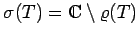 heißt Spektrum des Operators  . Da I-T offenbar genau dann einen stetigen Inversen (und demzufolge die Gleichung (12.151) immer eine Lösung, die stetig von der rechten Seite abhängt) besitzt, wenn 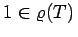, ist eine möglichst umfassende Kenntnis des Spektrums 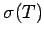 des Operators erforderlich. Aus den Eigenschaften der Resolventenmenge folgt sofort, daß das Spektrum eine abgeschlossene Teilmenge von
. Da I-T offenbar genau dann einen stetigen Inversen (und demzufolge die Gleichung (12.151) immer eine Lösung, die stetig von der rechten Seite abhängt) besitzt, wenn 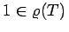, ist eine möglichst umfassende Kenntnis des Spektrums 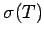 des Operators erforderlich. Aus den Eigenschaften der Resolventenmenge folgt sofort, daß das Spektrum eine abgeschlossene Teilmenge von  ist, die im Kreis 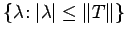 liegt, wobei in vielen Fällen deutlich kleiner als dieser Kreis ist. Für jeden linearen stetigen Operator auf einem komplexen BANACH-Raum ist das Spektrum nicht leer, und es gilt die Formel
ist, die im Kreis 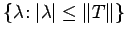 liegt, wobei in vielen Fällen deutlich kleiner als dieser Kreis ist. Für jeden linearen stetigen Operator auf einem komplexen BANACH-Raum ist das Spektrum nicht leer, und es gilt die Formel
Genauere Angaben über das Spektrum sind für viele gebräuchliche Klassen von Operatoren möglich.
Ist T ein Operator in einem endlichdimensionalen Raum  und hat die Gleichung 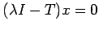 nur die triviale Lösung (d.h.,
und hat die Gleichung 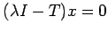 nur die triviale Lösung (d.h.,  ist injektiv), dann folgt bereits 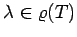 (d.h.,
ist injektiv), dann folgt bereits 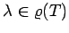 (d.h.,  ist surjektiv). Hat diese Gleichung in irgendeinem BANACH-Raum eine nichttriviale Lösung, dann ist der Operator
ist surjektiv). Hat diese Gleichung in irgendeinem BANACH-Raum eine nichttriviale Lösung, dann ist der Operator  nicht injektiv und 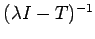 ist im allgemeinen nicht definiert.
nicht injektiv und 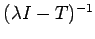 ist im allgemeinen nicht definiert.
Die Zahl 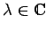 heißt Eigenwert des linearen Operators  , wenn die Gleichung 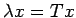 eine nichttriviale Lösung besitzt. Alle diese Lösungen heißen Eigenvektoren oder, falls
, wenn die Gleichung 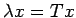 eine nichttriviale Lösung besitzt. Alle diese Lösungen heißen Eigenvektoren oder, falls  ein Funktionenraum ist (was in Anwendungen offenbar zutrifft), Eigenfunktionen des Operators T zu
ein Funktionenraum ist (was in Anwendungen offenbar zutrifft), Eigenfunktionen des Operators T zu  . Der von ihnen aufgespannte Teilraum heißt der Eigenraum zu
. Der von ihnen aufgespannte Teilraum heißt der Eigenraum zu  . Die Menge 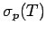 aller Eigenwerte von T heißt Punktspektrum des Operators
. Die Menge 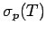 aller Eigenwerte von T heißt Punktspektrum des Operators  .
.